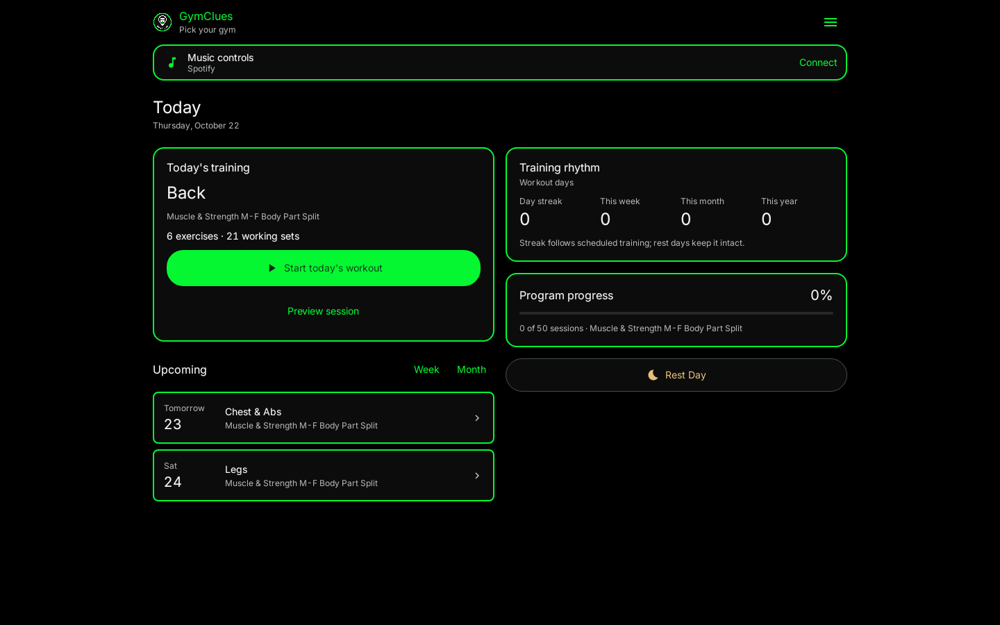

GymClues, redesigned
GymClues Default now mirrors the logo: black backgrounds, charcoal information sections and bright green outlines.
New: Five selectable color themes — GymClues Default, Ocean, Ember, Rosewood and Daylight. Open Menu > Theme in the app.

Native Android renders from Compose/Robolectric at 320, 390, 768 and 1440dp. Click a screen for its original size. These are working app screens; preview history and input values are test fixtures. Workout and recovery views may be scrolled after input or navigation.
GymClues Default: black, charcoal and logo-green outlines. Layout foundation: true-black-flat / seed 349504594. Design and validation notes.